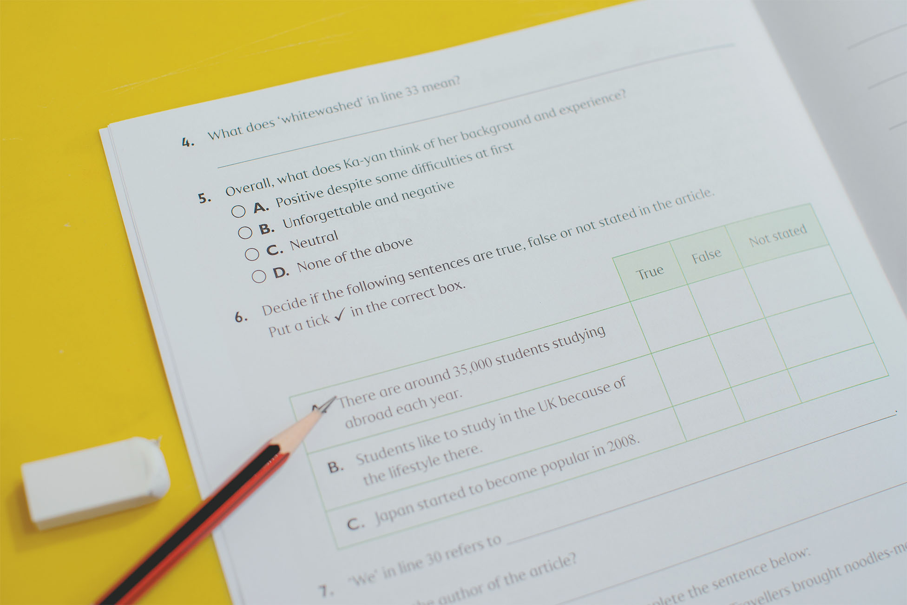

Ruth Miskin – RWI
英語課程
(適合年齡: 3歲或以上)
源自英國Ruth Miskin的優質教學保證
- 課程由英國教育部顧問Ruth Miskin編寫，現時廣獲英國逾5,000間幼稚園和小學採用，成效顯著。
- 所有授課導師均須接受英國Ruth Miskin團隊的定期培訓，確保師資和課程質素。
課程重點:
- 以教授原音(Pure Sounds) 為拼音基礎，貫通聽、說、讀、寫訓練，讓孩子掌握拼讀和拆解英語詞彙的技巧，從而學習標準的英語發音，擴充字庫，輕鬆應付默書和寫作。
- 孩子更會學習將拼音知識應用於閱讀和寫作上，進一步提升英語讀、寫能力。
Cambridge & Phonics
英語課程
(適合年齡: 4歲或以上)
課程重點:
- 以Ruth Miskin – RWI原音教學法，幫助孩子打好拼音基礎，掌握拼讀和拆解英語詞彙的技巧。
- 課程然後會教導他們將拼音知識靈活運用於劍橋英語考試 (YLE)中，全面提升孩子的英語能力，讓他們可以輕鬆自信地應付考試。
Comprehension"& Writing
英語課程
(適合年齡: 6歲或以上)
課程重點:
- 以生活化的主題貫穿閱讀和寫作訓練，讓孩子從閱讀中逐步掌握英語讀、寫策略，同時擴充詞彙和學習文法知識。
- 課程更將近年最新的考試題型融入練習中，幫助孩子熟習考試模式和答題技巧，輕鬆應付考試。
